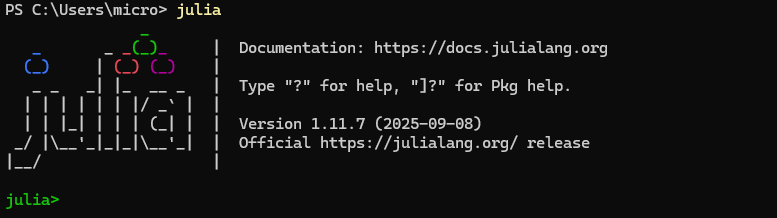

Julia Setup for PowerDynamics
In this document we'll provide a very brief overview on how to set up your development environment with Julia. The goal of this document is to get you ready to follow our examples in this documentation.
If you've worked with Julia before, you can probably skip this part and jump to the getting started tutorial.
We recommend checking out further resources, like the excellent
- community provided Modern Julia Workflows blog and the
- official Julia documentation.
Install Julia
First you need to install Julia. Check out the install instructions on the official Julia homepage. It is recommended to install Julia using juliaup.
juliaup is a Julia version multiplexer, you can use it to manage different Julia versions on the same system using commands like juliaup update (update installed versions), juliaup add 1.11 (add a new version), juliaup default 1.11 (tell your computer which version to start when you invoke the julia command).
In general, Julia can be installed and run without any administrator privileges.
Windows
You can install Julia on Windows using the Microsoft Store. Instead of searching manually, you can invoke this installation in the terminal. Search for powershell in the start menu and execute
winget install --name Julia --id 9NJNWW8PVKMN -e -s msstoreLinux/Mac
Execute the following code in your terminal:
curl -fsSL https://install.julialang.org | shThe installer will ask you some questions, you won't need to change any defaults.
Verify installation
After the installation, run the julia command in your terminal. You should get an output like this:

By default, juliaup will install the latest stable version of Julia. As of 10/2025, that is 1.12. However there are some minor problems in 1.12 which might make it less stable. For now, I'd advise you to stay at Julia 1.11. To do so, run
juliaup add 1.11
juliaup default 1.11after which your julia command should point to Julia 1.11 by default.
The Julia-REPL
Julia's main interface is the REPL (read-eval-print-loop). It is similar to ipython or the Matlab command window. You can execute code in the REPL by typing it. Try julia> println("hello world")<RETURN> to run your first Julia command. Exit the REPL by pressing CTRL + d or typing exit()<RETURN>.
The REPL has lots of great features. For example:
- hit
]to enter package manager mode (see Environment Basics below) - hit
?to enter help mode: search for functions or concepts to get documentation - scroll through history using arrow up and arrow down.
Install VSCode with the Julia extension
The REPL is great, but we also need an editor for writing code. The best editor for most people will be Visual Studio Code. Please download and install it.
Within VSCode, you need to install the julia-extension. You should be able to click the "install" link in any browser, it'll open VSCode and install the extension. Alternatively, you can search for "Julia" in the VSCode extension store.
Environment and Package Manager Basics
Julia has a built-in package manager. It lets you install, update and manage dependencies across your projects. Often, different projects require different dependencies and different versions.
Let's say you have a research project A using PowerDynamics at version v1.0.0 and it's working great. However, you want to start a new project B, which requires a new feature introduced in version v2.2.0! Environments help you to set up two different folders, one of which uses v1.0.0 and one uses v2.2.0. This approach helps you to try out new stuff in B without the fear of breaking your already working project A due to incompatible updates.
To create your first environment, create a new folder somewhere (for example /home/Documents/powerdynamics_playground). You can open this (empty) folder in VSCode and create a new file for your first script:

Open the newly created file, hit CTRL + SHIFT + P to bring up the VSCode "command palette", search for "Start REPL" and launch your Julia REPL.
In the REPL, you can execute pwd() (print working directory) to see the directory where your REPL was launched. Hit ] to launch the package manager. Your REPL changes:
(@v1.11) pkg>This output means your active environment is the global environment for Julia v1.11. If you were to add packages here, you would add them globally. Normally, that's not what we want. So instead we activate the current folder (.) as our working environment:
(@v1.11) pkg> activate .After activation, we can add PowerDynamics to our newly created environment using
(powerdynamics_playground) pkg> add PowerDynamicsThis will install PowerDynamics and all its dependencies. It will also precompile all of that. This may take a while...

Once you've added a package, you'll see that two new files appeared: Project.toml and Manifest.toml. The Project.toml lists all of your dependencies. This is the file you change when adding new packages. It is relatively short and human readable. It only lists the top level dependencies, in this case just PowerDynamics. The Manifest.toml on the other hand lists all packages in the current environment. It is a full snapshot containing all versions of every dependency and also the dependencies of your dependencies. Never edit it by hand!
ProjectRoot
├╴example_script.jl
├╴Project.toml
╰╴Manifest.tomlThe existence of a Project.toml file marks a folder as a project. You can activate such a folder. When executing code in a file using the Julia VSCode extension, it will automatically activate the environment for you.
Executing Code in VSCode
Working with Julia is much like working in a notebook (Jupyter, Google Colab or similar), due to the persistent REPL. Because of how Julia works internally, everything you do will take much more time the first time you do it. Therefore, it is always preferred to have a persistent REPL over relaunching Julia. That is:
- opening a REPL,
- executing a script in REPL,
- changing script and
- run script again in same REPL
is much preferred to
- executing a script by calling
julia myscript.jl - changing the script
- executing it again by calling
julia myscript.jl
in which case you'd pay the startup costs on every new run.
Besides executing an entire script (play button up top), you can execute single lines and code blocks in VSCode:
- Put the VSCode cursor on a line and hit
SHIFT + RETURNto "send" that line of code to the REPL. If the line is part of a multiline expression (like a function), it'll "send" the entire block. - Select multiple lines and hit
SHIFT + RETURNto "send" all selected lines. - Hit
ALT + RETURN(orCMD + RETURN) to execute an entire code cell, where a code cell is everything between lines starting with##.
Install ModelingToolkit in addition to PowerDynamics in your environment and copy the following code to your script:
using PowerDynamics
using ModelingToolkit
using PowerDynamics: Library
@named swing = Library.Swing(V=1)
busmodel = MTKBus(swing)
swingbus = compile_bus(busmodel)Execute it line by line using SHIFT + RETURN and enjoy your first bus model!

Running PowerDynamics Examples
Now you know everything you need to know to run our examples locally.
At the beginning of each example, there is a link:
This tutorial can be downloaded as a normal Julia script here.
Go to the getting started tutorial, download the script, put it in your directory and go through it, executing it block by block.
For the script to work you need to install additional packages. You can install multiple packages at once:
julia> ] add OrdinaryDiffEqRosenbrock, CairoMakieDefining Functions and Revise.jl
Eventually, you'll grow out of putting everything into a script. The obvious next step is to put parts of your code in functions. You could put those functions in the script, however if you change the code you need to evaluate them again. Alternatively, you can create a new file, for example myfunctions.jl:
# contents of myfunctions.jl
function foo()
println("Hello World")
endThen, you can use Revise.jl to track changes in that file. In your main script, write
Revise.includet("myfunctions.jl") # <- execute this line SHIFT+RETURN
foo() # <- prints "hello world"Then, you can update your myfunctions.jl file
# contents of myfunctions.jl
function foo()
println("Hello World, but different.")
endand save it. If you evaluate foo() again (either in REPL directly or in your script), it'll print "Hello World, but different." – Revise automatically updates the function definition.
At some point, you might want to put your project in a Julia Package, but that's beyond the scope of this tutorial. Consult the documentation and your favorite Chatbot for help. Especially check out ] dev MyPackage in contrast to ] add MyPackage.
Additional Remarks & Tips
- Embrace the interactivity of the REPL: it really is (one of) Julia's superpowers. Play around with objects, make use of the help mode and use functions like
propertynames()to explore structures. - Get to know the package manager. It is really good! However, package management is not a trivial problem so package managers tend to be non-trivial. Read the docs and try to understand it. Just using it by trial and error will lead to major frustration down the road. Especially the option to
] devpackages and define local sources are very powerful tools. - Seek help. The julia discourse and the Julia Slack and the Julia Zulip are great platforms to post your problems and get help from the community.